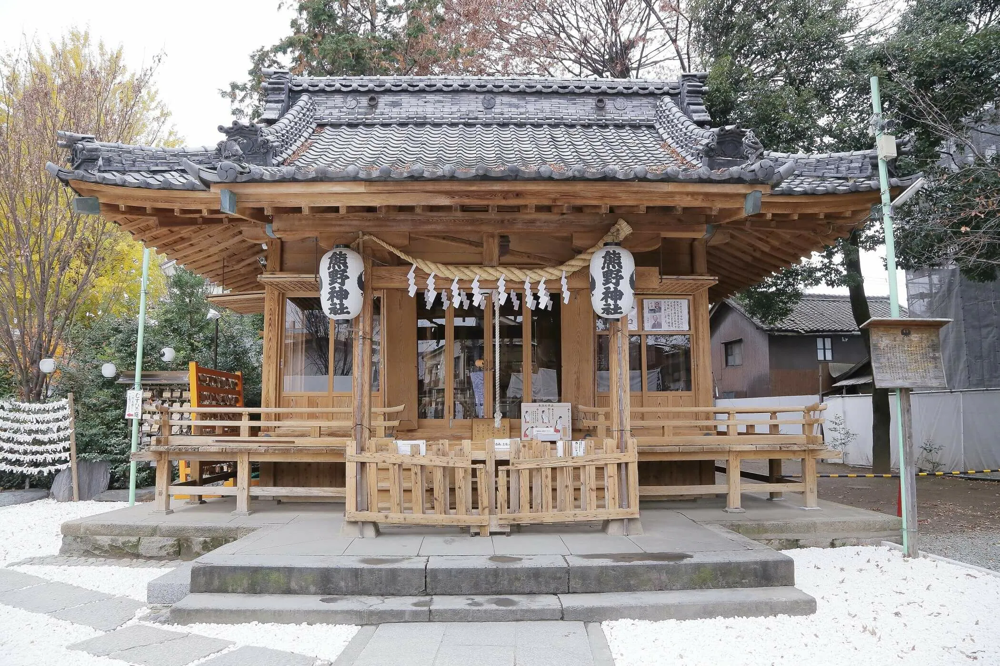
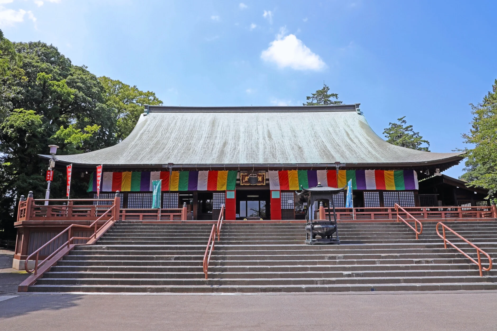

TOKYO TRIP DAY 4
穿越小江戶
池袋・川越 | 藏造老街的時光旅行
🚀 出發！前往川越
JR 山手線 御徒町 池袋 (轉乘)東武東上線 池袋 川越站 (急行約 30 分鐘)
Spot 01

川越熊野神社：開運與緣結的守護
抵達川越後的第一站。這座神社以祈求運勢與緣結而聞名，神社氛圍活潑且平易近人，是深受當地人與遊客喜愛的能量景點。
錢洗辨財天
神社內設有寶池，您可以將硬幣放入竹籃中用泉水清洗。據說洗過的錢會帶動財運，在日後以數倍的形式回到您的身邊。
足踏健康步道
參道旁有一條鋪滿鵝卵石的步道，建議脫鞋挑戰。透過踩踏石頭按摩足底穴位，能檢測身體健康並帶來能量。
WALK 漫步前往一番街 (步行約 5-8 分鐘)
Spot 02

小江戶一番街：沉浸江戶盛世
川越最代表性的老街，兩旁矗立著宏偉的「藏造」式建築。厚實土牆與黑色屋瓦是為了防範江戶時期的火災，如今成了珍貴的文化遺產。
地標：時之鐘
這座木造鐘樓自江戶初期就守護著川越，每日會在固定時段準時鳴鐘，悠揚的鐘聲被選為「日本音風景百選」。
菓子屋橫丁
聚集了數十家傳統糖果店。這裡販售著充滿懷舊氣息的烤糰子、地瓜點心與大根糖，是川越人情味的縮影。
WALK 前往冰川神社 (步行約 10 分鐘)
Spot 03
川越冰川神社：浪漫的水邊結緣地
擁有 1500 年歷史，是求取姻緣與家庭圓滿的首選聖地。其著名的繪馬隧道與充滿創意的求籤方式，讓許願也充滿樂趣。
鯛魚御守求籤
籤詩藏在彩色鯛魚模型中。拿起釣竿，親手「釣」起一隻鯛魚來讀取運勢，是神社最受歡迎的體驗。
繪馬隧道
掛滿許願繪馬的隧道是著名的攝影點。在光影交織下走過隧道，能感受到匯聚於此的強大信念與祝福。
WALK 步行前往喜多院 (步行約 15 分鐘)
Spot 04

喜多院：江戶城遺落的歷史拼圖
作為川越的大本山，喜多院與德川將軍家有深厚淵源。江戶城部分建物曾移築至此，讓這裡保存了珍貴的城內空間。
五百羅漢像
園內矗立著 500 多尊表情、動作完全不同的羅漢石像。有的沉思有的歡笑，展現了生動的人間百態。
德川家光誕生間
客殿內保存了江戶城移築而來的房間，精緻的障壁畫與木造結構，訴說著德川家族的輝煌歷史。
🌙 圓滿歸途
喜多院
巴士/步行
川越站
東武線
川越站
池袋
山手線
池袋
御徒町
暫時告別江戶氛圍，返回繁華的東京中心。
今日總結：
在川越體驗了跨越四百年的時光之旅。洗了錢、釣了魚、看了古蹟。今晚就在 Dormy Inn 的溫泉與夜鳴拉麵中完美收尾吧。
在川越體驗了跨越四百年的時光之旅。洗了錢、釣了魚、看了古蹟。今晚就在 Dormy Inn 的溫泉與夜鳴拉麵中完美收尾吧。